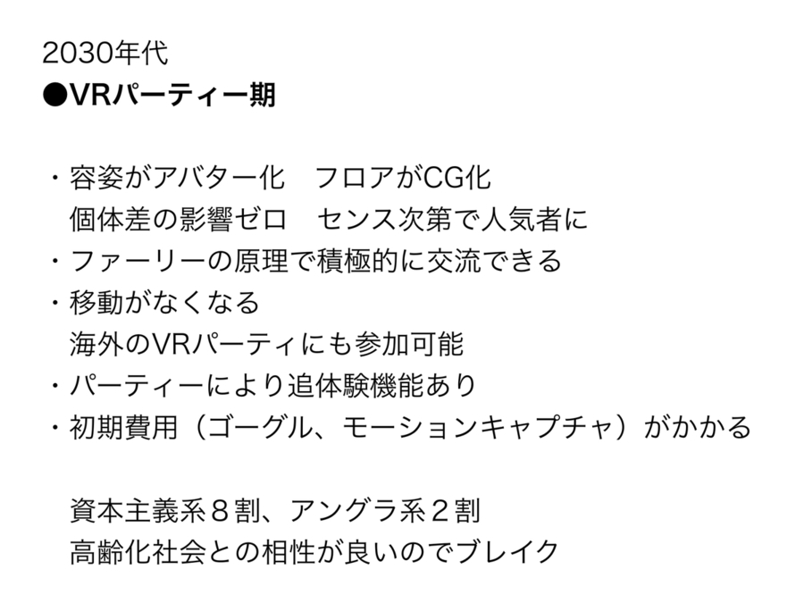

-
日本の未来予測一覧表
僕が紹介するのはコンビニとかで500円とかで良く売っている未来予測本です。これが結構、時系列にまとめられていて面白いんです。今回はこの本とミシェル・ウエルベックの『ある島の可能性』という本から音楽のライブ体験における未来予測をしてみました。『ある島の可能性』はオリジナルの現代人から20世代以上経たネオ・ヒューマンの世界を描いた未来のSFです。どんな未来かというと人類を悩ませてきた煩わしい要素がどんどんなくなって、他者と接続が要らなくなった世界なんですけど、これがひと昔前のSFよりリアルなんです。
-
『ブレードランナー』や『攻殻機動隊』、『砂の惑星 DUNE』でもいいんですけど、SFの多くはテクノロジーが進化して電脳化している割に、当時の冷戦感も引きずっているんでしょうけどまだフィジカル的な強者が支配していたりして、僕にはそれがあまりリアルではありませんでした。というのも、ネット環境の利便性が上がると自然とか運動するみたいな超ベーシックなものを除いてはどんどんリアルなコミュニケーションは効率が悪くなっている、と感じるからです。1日8〜10時間ほど働き、移動や付き合いを含めると自分の時間というのはせいぜい3、4時間。効率的に時間を使いたいという欲求が生まれるのは当然です。自分もライブに行くより家で何アーティストも聴く、映画館よりも配信で済ます、など自宅接続する方が楽だと感じる瞬間が増えています。つまり、リアルでの行動はどんどん地味になっている。ここからアンドロイドとどつき合ったり、銃で戦い合う未来が考えにくいんです。リアル特有のしがらみや接続を絶った未来が人類が求めた生活とするウエルベックの方がリアルと感じるのはそういう点です。
この先音楽の世界もストリーミングなどで、プレイリストをもとに他者と繋がれ、ライブも映像共有されタイムラインやいいね機能などのSNS化が進んで、音源やグッズ、チケットもそこで買えるようになれば、もうほとんどは自宅で事足りる。現在でもイベントに行くより人のしがらみもない自宅で、聴きたいものを沢山掘って自分が良かった視聴体験をアップして自分を知ってもらえればいい、というタイプの若者も多いと思います。街にかっこいい若者が増えたとか言われますけど、あれはルックスやコミュ力があるか、昔ながらの資本主義的なストーリーに侵されている層の純度が高くなって、いわゆる“持たざる者”を自覚する人たちが、リアルのコスパの悪さに気付き出して街に出なくなったのも一因としてあるのではないかと思います。
つまり、自宅でも人と繋がってライブ体験に近い興奮や感覚が得られれば“現場の自宅化”が進む。関西のライブの音楽シーンを見てもオーガナイザーを選ぶ若者は減っているように思います。これは才能がある人がいないのではなくリアルのコスパがどんどん悪くなっている状況を肌で感じているから、もあるのではないでしょうか？今現在のリアルのパーティーを私なりに整理してみました。 -
これが次の段階「サブスク共有進化期」になればだんだんと金・時間・手間の格差が開き出します。
-
2020年代
2020年代には主催側もリアルで一生懸命頑張って赤字になって10人程度なのと、ネットで数百人のアクセスがあるのだったら後者の方がコスパが良い、と思う若者が増えてくるのではないでしょうか。ただしこの段階ではパーティーがオンラインで進化するという話ではなくてオルタナティブなものです。あくまで利便性が上がっただけです。中国のTencent MusicやQQのように、オンライン・ライブに参加できる仕組みができたり、限定のライブvirsionの音源や映像、グッズ、チケットもそこで買えるようになり、似ている属性のアカウントがAIによって表示され、効率的に仲間が集められます。SNS要素が入れば、ますます現場よりも楽しいと思う人も出てくるでしょう。でも何だかんだリアルのライブにはまだ負けてしまうので、アーティストは両輪になると思います。しかしだからと言ってリアルのパーティーがダメになるかというとそうではなく『アンドロイドは電気羊の夢を見るか？』で本物の動物を飼うことに価値があるように、逆にリアルに希少価値が生まれてくるのではないかと思います。
そして、この後、未来予測本によると30年代くらいからVRの技術がどんどん上がってくる。この段階になれば、リアルの代替としてはかなり釣り合いが取れてくる。『レディプレイヤー１』みたいな世界です。
- 
-
2030年代
ここに書いているファーリーというのはこういうものなんですけども。

-
Furry fandom
Wikipedia
-
2030年代
ファーリーとは、英語圏でのオタク用語における萌え属性の一つで、いわゆるケモノ化と言われるようなものです。アメリカだともう数百人規模のコンベンションがあったりもするくらい人気です。なぜかと言うと、これPTSDや対人恐怖症、社会に出れない傷を負った人に大変な効果があって、動物になる事で他者と会話できたり、ハグできたり、ふざけあってみたりと生身でいる時ではできない事ができるようになれるんです。これがコスプレ会だったらダメでしょうね。美貌やお金をかけた人が強くなって余計つらくなるというリアルと同じ格差が生まれちゃいますから。完全に皆がフラットな動物だからいいんです。 それと全く同じ原理でアバターになる事で個体差の影響がなくなって、逆にセンスがある人が注目されちゃう。それにいつでも都合のいい時間に接続できて、場所も選ばない。ベルリンでもロシアでもアフリカでも色々な世界の面白いパーティーに参加可能です。あとこれは高齢化社会にもボケ防止や自宅でできる軽い運動みたいになって相性がいいので、高齢化する先進国では受け入れられやすいのではないでしょうか。ただ現在のVtuberの状況を考えるとキズナアイ的な資本力側とアングラ側と分かれそうな気がします。soujさんとかがVR版dark jinjaとかFREE RAVEをやってくれたらすごくかっこいい世界を作ってくれそうで参加してみたいです。 続いて、この本に基づいて、さらに2040年〜50年の未来を想像してみました。さっきから完全に与太話ですけども…。
-
2040年〜50年
どうもこの頃にはインプラントでもう裸眼ARができちゃっているみたいなんですね（笑）。で、完全にVR期は完全に旧世代になり衰退します。ガラケーからiPhoneに変わったくらいの感じで低コスト化と一般普及が進みます。こうなるとVRではなくてAR、拡張現実の世界です。今だと『ポケモンGO』みたいな感じですかね？現実に色々情報が載ってくる。街、自然が舞台になるのでネオ・レイヴブームが起こるかもしれません。その頃にはAIが合法的かつ効率的にキマるドラッグを自動生成してくれて、かつてのレイヴ時代を懐かしむようなパーティーが組まれる事でしょう。これは製作者側にも良い話ですね。VR環境と現実環境を融合するMR（複合現実）や過去を現在と同じ感覚で体験できるSR（代替現実）という技術も進んでいるようなので、音楽以外でも映画やアートの分野でも未体験な事ができそうです。
というわけで、2020年代は東京みたいな都市以外は外に出てもどうせ若者はいませんし、無理に外見のいい人、金がある人、コミュ力がある人と比較せず、僕らは家で楽しむスキルを上げるのが得策です。またアーティストの人はボアダムスみたいな時代やそういう存在がいないと嘆くおっさんの声は忘れてネットでの創作８：ライブ２くらいで割り切るのが一番良いと思います。ネットでヤバけりゃリアルに来ます。その間にお金とVR人脈を作って30〜40年代になったらバーチャルで楽しむ、という具合に備えをしておくのがいいのではないでしょうか。